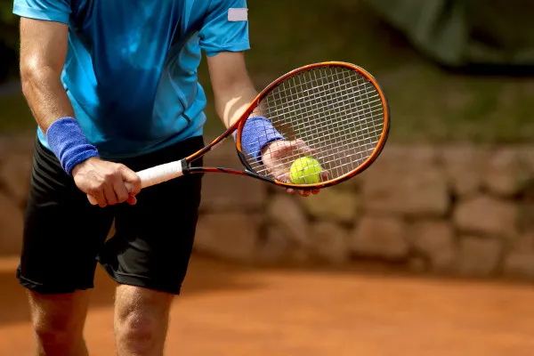

Tenis
O tênis é um esporte no qual o jogador lança uma bola especial com uma raquete para o adversário que se encontra do outro lado da rede. O jogo envolve raciocínio rápido e estratégia.Modalidade esportiva muito praticada no mundo, o tênis deve ser jogado em quadras específicas, que podem ser feitas de materiais como saibro, grama e cimento. Os tenistas também precisam usar uniformes e acessórios específicos.Nascido na França no século XII, o tênis conta com diversos torneios ao redor do mundo. Mas quatro deles têm mais destaque e compõem o Grand Slam do Tênis. O torneio de Wimbledon é um deles. "O tênis é um esporte no qual dois jogadores lançam uma bola, usando uma raquete, acima da rede que separa uma quadra. O esporte também pode ser praticado por quatro jogadores, sendo duas duplas.O objetivo do esporte tênis é o jogador rebater a bola com a raquete para o lado do adversário para atingir mais pontos. A prática esportiva exige raciocínio rápido e muita estratégia dos competidores.O termo tênis tem origem na palavra francesa “tenez”, cujo significado é “segure”, imperativo do verbo segurar.
